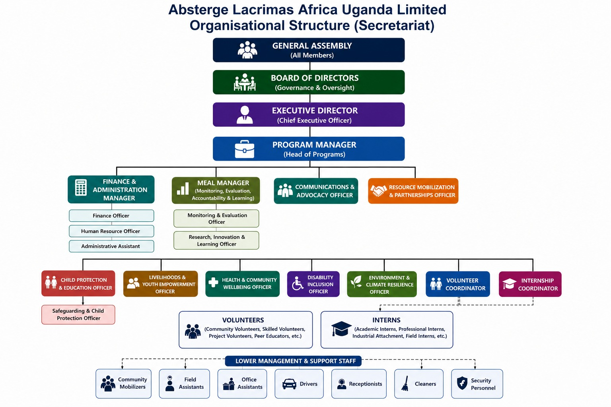

A dedicated secretariat committed to delivering integrated development programs across Uganda.
Absterge Lacrimas Africa Uganda Limited operates through a structured secretariat that ensures effective governance, program delivery, and community impact. Our team spans governance, program management, finance, health, environment, disability inclusion, and research.
Our secretariat is designed for accountability at every level — from the General Assembly down to field staff.
A visual overview of how our secretariat is structured from governance to community level.

We welcome passionate individuals — volunteers, interns, professionals — who share our commitment to transforming vulnerable communities in Uganda.
Get InvolvedVolunteer — Community, skilled, project, and peer educator volunteer opportunities available.
Intern — Academic, professional, industrial attachment, and field internship positions.
Partner — NGOs, companies, academic institutions, and government bodies are welcome to collaborate.